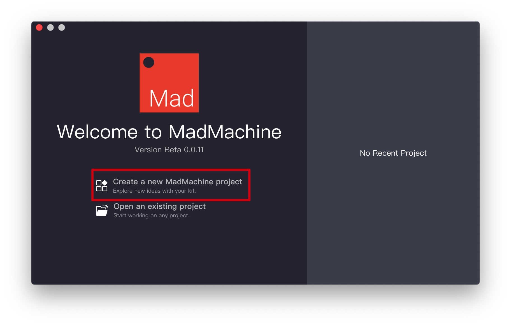
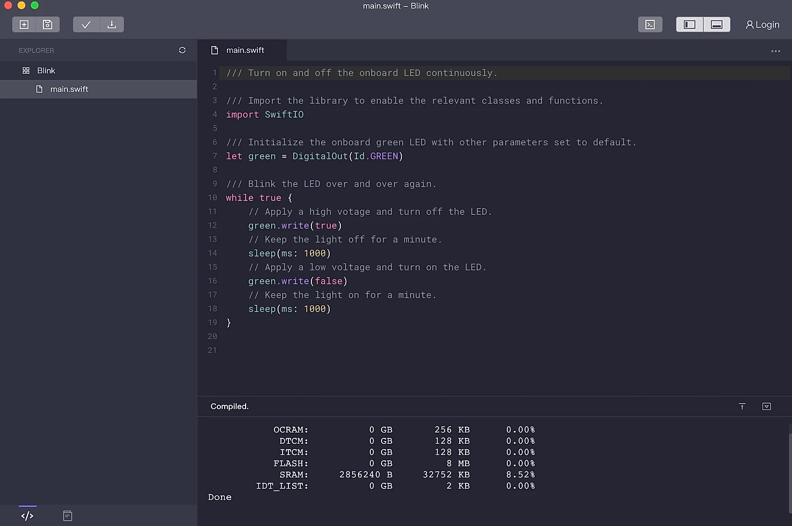

Getting Started
Get your SwiftIO board? 🤣 Follow us step-by-step to realize your first project.
Step 1: Download and install the MadMachine IDE
The MadMachine IDE provides you with an easy way to code. It is available on Windows and Mac now.
So first of all, you need to download and install the MadMachine IDE to program your SwiftIO board. You'll find the latest software package here.
Select the appropriate version according to your operating system.
If you meet with any problem, please refer to FAQ.
When you first open up the MadMachine IDE, it appears like this:

Step 2: Coding in the IDE
It's time to start your first project in the IDE 🥳 .
First of all, create a new project.

We called Blink. Just try to choose a descriptive name as you like.
Then click Create.

Some read-only sample codes are offered in the IDE. You can copy them into the project and see what's going on.
Here is a simple example for your reference:
import SwiftIO
let green = DigitalOut(Id.GREEN)
while true {
green.write(true)
sleep(ms: 1000)
green.write(false)
sleep(ms: 1000)
}

Step 3: Prepare SD card and confirm USB connection
Make sure that you have inserted a SD card into the slot.
Connect your SwiftIO board to your computer through the Download port using a Micro-USB cable.
Press the DOWNLOAD button, SwiftIO will mount the SD card as a USB Flash Drive on your computer.
Note: Bad quality USB cable or some third-party USB hub may cause connection failure.
The onboard RGB LED will show you the current status of the USB connection:
| RED | GREEN | BLUE | |
|---|---|---|---|
| On | USB communication failed | USB connection established | - |
| Slow flashing | Verify file(swiftio.bin) failed | - | - |
| Fast flashing | Open file(swiftio.bin) failed | Detecting USB connection | Detecting SD card |
Step 4: Build your code and download it to the board
Once the SD card has been mounted successfully, an icon will appear in the status bar of the IDE.
Click the Download button.

The IDE begins to build your project and then download it to the board if there is no error.

Wait a few seconds, you will see the USB flash drive is removed automatically.
And then, the onboard LED will blink✨ .
You can also watch this tutorial video to get more info.